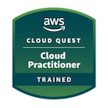

01 · Structure
HTML & accessibility
Semantic page structure, meaningful headings, descriptive links, image alternatives, and keyboard-friendly navigation.
Coursework & practice
Skills in progress
A snapshot of what I’ve studied and practiced so far. I’m building depth through projects and looking forward to learning alongside a team.
01 · Structure
Semantic page structure, meaningful headings, descriptive links, image alternatives, and keyboard-friendly navigation.
Coursework & practice
02 · Presentation
External stylesheets, consistent visual systems, Flexbox and Grid layouts, and media queries for smaller screens.
Coursework & practice
03 · Interaction
Using variables, functions, arrays, loops, conditionals, event listeners, and DOM updates to build useful interactions.
Coursework & practice
04 · Experience
Organizing information, building clear visual hierarchy, and making controls understandable and predictable.
Coursework & practice
05 · Publishing
Organizing a small website project, using relative paths, and preparing work for online publishing.
Coursework & practice
06 · Your strengths
I follow current cybersecurity and technology trends and am interested in building toward digital forensics or related work that can help people. I’m also curious about practical AI applications that could address real-world needs existing solutions do not meet.
Career interest · developing knowledge
Completed course
Completed a Google-authorized course offered through Coursera on July 2, 2026.
07 · Systems administration
Currently learning Windows Server and building my understanding of server administration and networking.
Currently learning
Training badge

AWS Cloud Quest training in Cloud Practitioner fundamentals.
08 · Emerging technology
Curious about how AI can be applied in real-world settings to address problems existing approaches may not solve and improve people’s lives.
Area of curiosity
I’m especially interested in IT support, network administration, and related fields. I bring a strong foundation, a dependable work ethic, and a healthy respect for well-named files.
See projects & contact